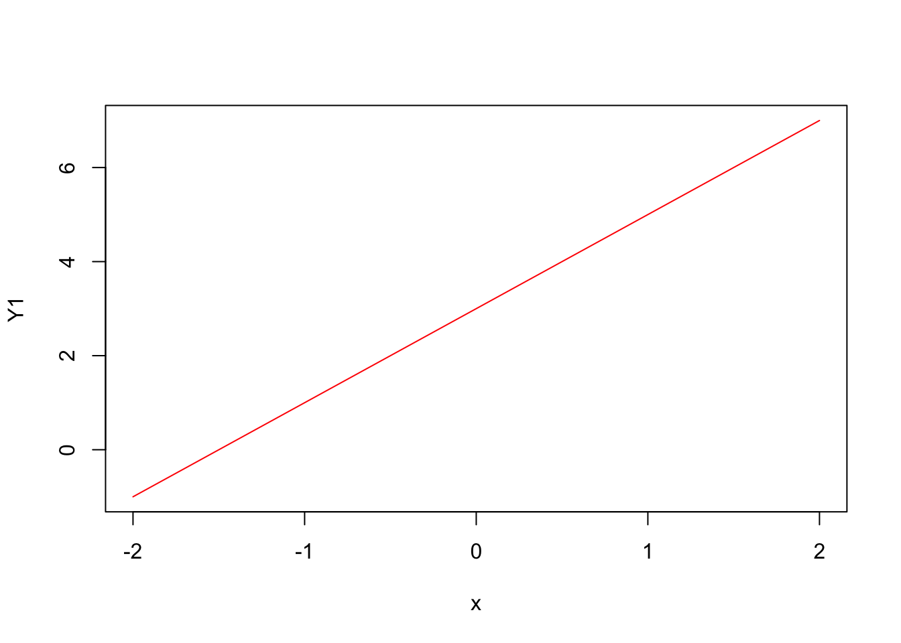
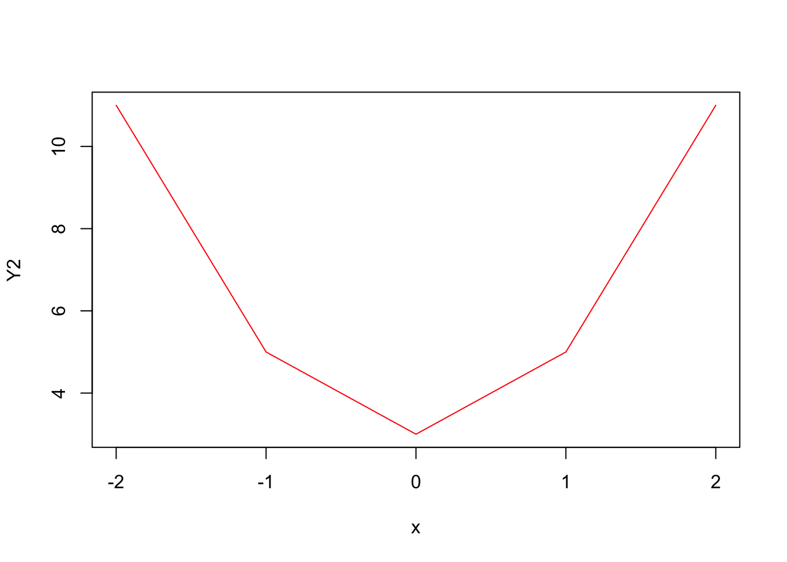
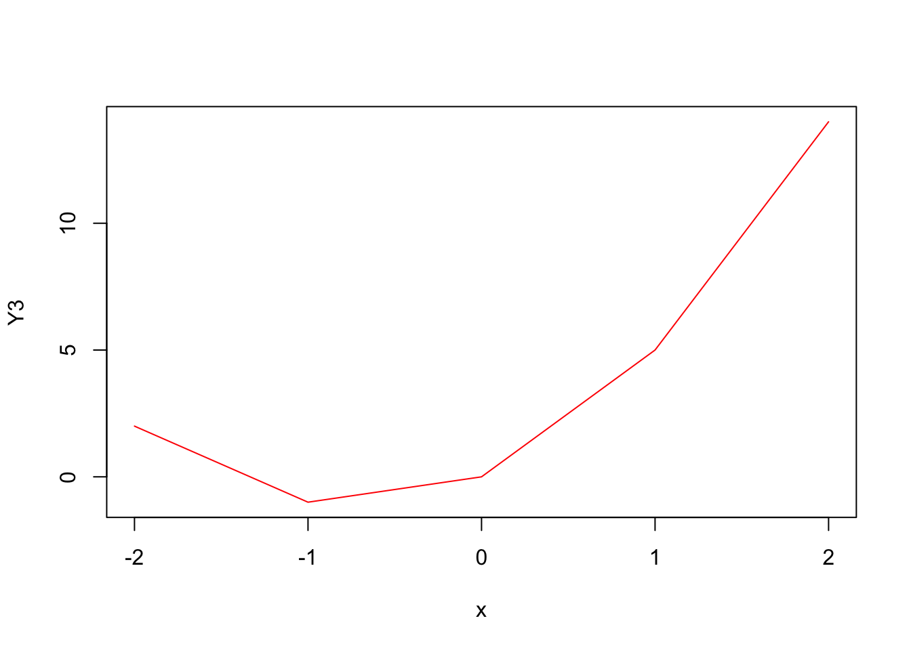
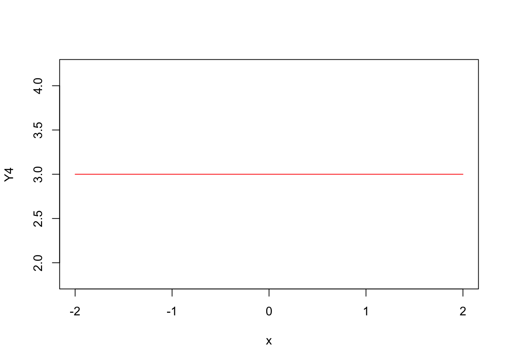
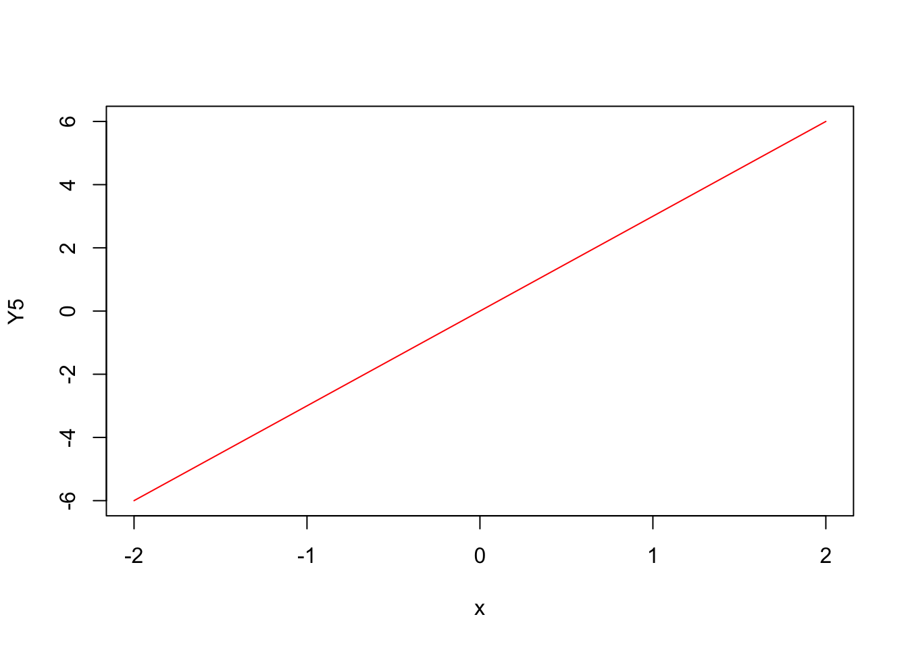
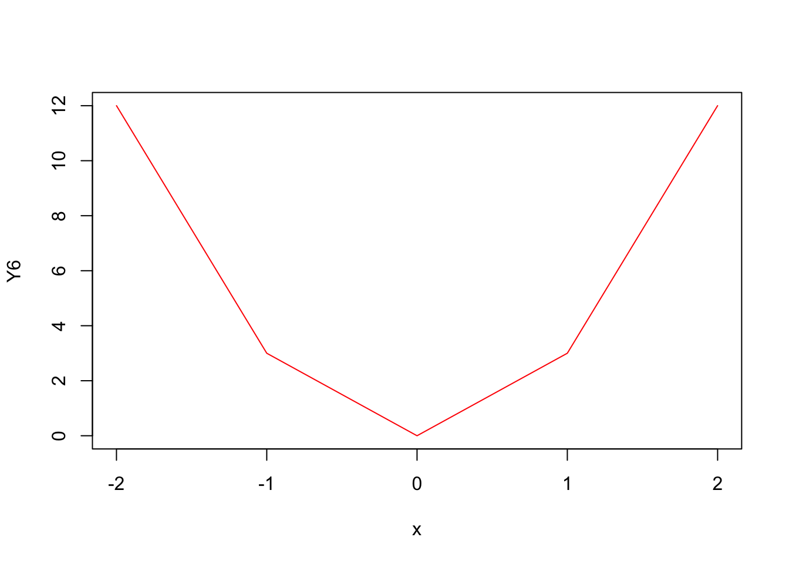
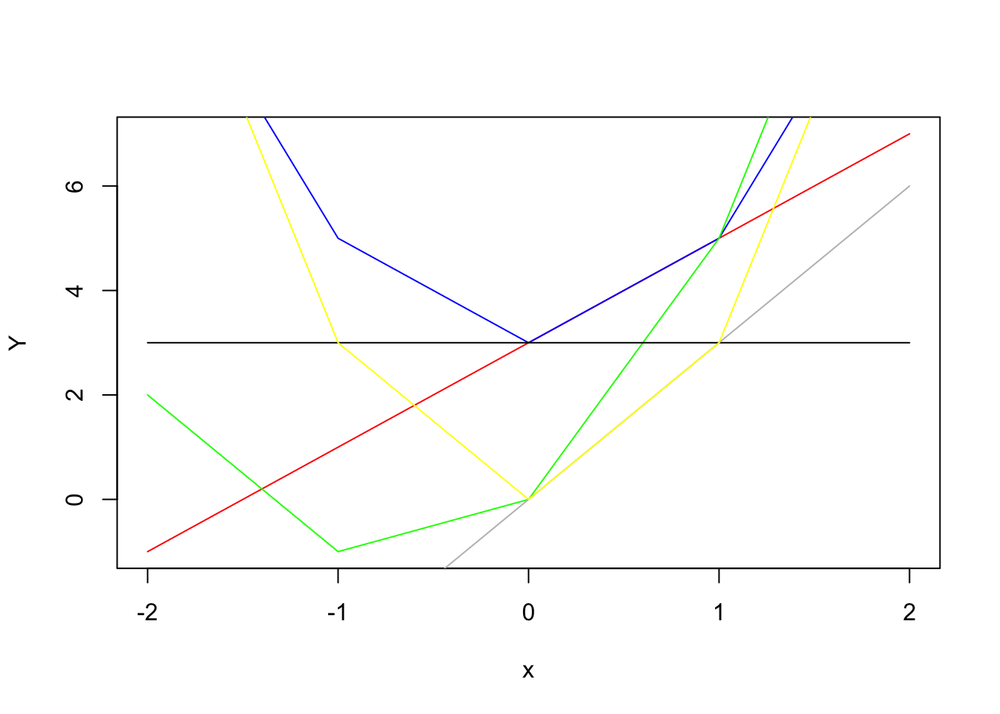

The quadratic equation takes the general form of \(y=ax^2+bx+c\), where a, b and c are known values. “X” is the variable or unkoown.
In the previous R-file, I’ve defined x as a vector, which takes the value of
x## [1] -2 -1 0 1 2Now we will try to examine the six different cases of the quadratic equation when differnt parameters are zeros.
When the parameter \(a=0\), the output we get will be (we can call this \(Y1\))
Y1## [1] -1 1 3 5 7
We can see from the graph that when \(a=0\), the equation becomes a standard linear equation, where \(b\) is the slope and \(c\) is the y-intercept.
When the parameter \(b=0\), the output we get will be (we can call this \(Y2\))
Y2## [1] 11 5 3 5 11
When \(b=0\), the graph still looks like a quadratic function with a vertice of \((0,3)\).
When the parameter \(c=0\), the output we get will be (we can call this \(Y3\))
Y3## [1] 2 -1 0 5 14
When \(c=0\), the vertice of the graph appears to shift to the left.
When the parameter \(a\) and \(b\) both equal to 0, the output we get will be (we can call this \(Y4\))
Y4## [1] 3 3 3 3 3
As you can see, the graph simply becomes a stright horizontal line.
When the parameter \(a\) and \(c\) both equal to 0, the output we get will be (we can call this \(Y5\))
Y5## [1] -6 -3 0 3 6
Again, this graph becomes a standard linear equation, where b is the slope, and the intercept is 0.
When the parameter \(b\) and \(c\) both equal to 0, the output we get will be (we can call this \(Y6\))
Y6## [1] 12 3 0 3 12
Now this graph is a normal hyperbola graph with a vertice of \((0,0)\).
We’ve examined the situations where different parameters are zeros, now let’s put all of them onto the same plot to better understand what we’ve found.

We know that in a quadratic equation, \(a\) \(b\) and \(c\) are parameters or coefficients. The coefficient of \(a\) determines the width of the parabola, when it takes the value of 0, it becomes a simple linear equation (refer to the graph with red, black and gray colored lines). \(b\) is the “linear” coefficient of \(X\), it determines where the vertices will shift to. When it takes the value of 0, the vertices will become \((0,C)\) (refer to the graph with blue and yellow colored lines). The coefficient of \(c\) is just the constant, it determines whether the graph shifts upward or downward. When it takes the value of 0, the equation still reamins to be a quadratic equation.